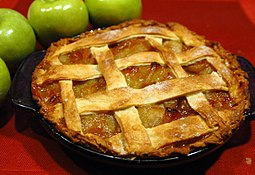

Easy Swedish Apple Pie

Description
Apple pie baked with a cinnamon crust.
Ingredients
- 1/½ pounds Granny Smith apples - peeled, cored and sliced
- 1 tablespoon sugar
- 1 cup sugar
- 1 cup flour
- 1 teaspoon cinnamon/li>
- ¾ cup melted butter
- 1 egg
Directions
- Preheat oven to 350 degrees F (175 degrees C).
- Toss apples with 1 tablespoon of sugar, and pour them into a pie plate. Thoroughly mix together 1 cup of sugar with the flour, cinnamon, butter, and egg. Spread this evenly over the top of the pie.
- Bake in preheated oven until the apples have cooked and the topping is golden brown, about 40 to 45 minutes.
Nutrition Facts
Per Serving: 359 calories; protein 2.8g; carbohydrates 49.3g; fat 18g; cholesterol 69mg; sodium 132.5mg. Full Nutrition